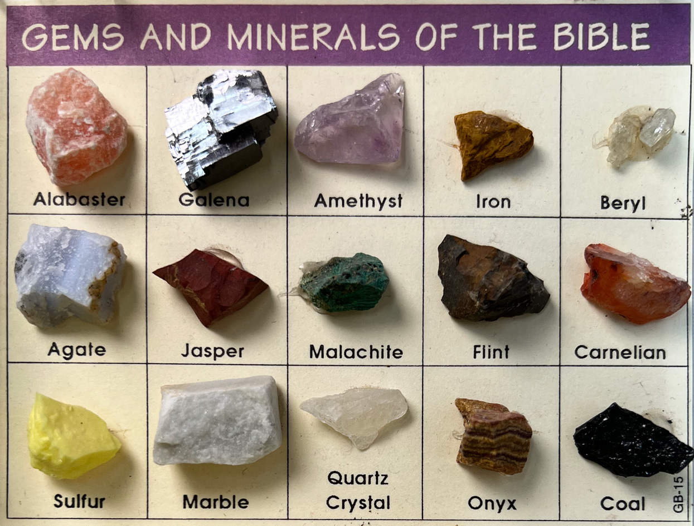
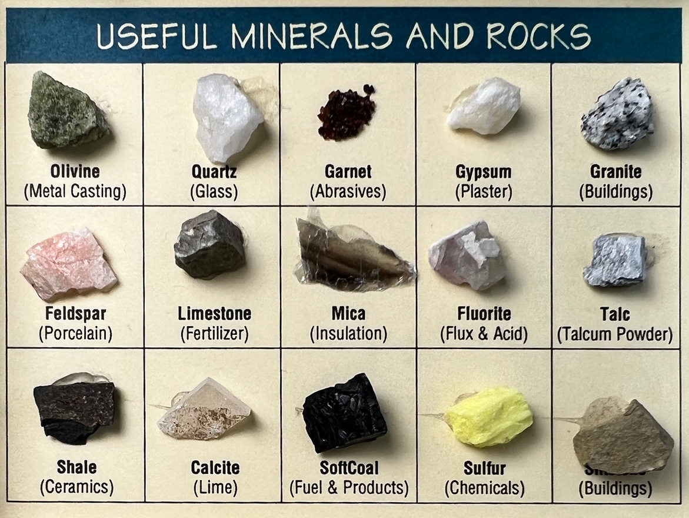
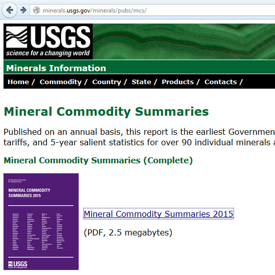

Minerals in Traditional Ceramics
Introduction
The materials we use are powders and we assess their physical presence on that level. However, these powders are generally composed of microscopic mineral particles (except for frits of course). Often the powder is a completely different color than the parent mineral lumps. In many materials these particles are homogeneous, equal citizens so to speak. In other materials we buy as a powder, their ultimate particles have a diversity of identities with very different shapes and sizes and different thermal, physical and electrolytic behaviors. In such materials, particles can interact in complex ways during firing, especially when some of them begin to melt or decompose long before others. They can also act as catalysts to the melting of others or can trigger changes in the crystal structure of others. With temperature increase, some particles transform into other crystal species that interact in new ways, then either dissolve in an existing melt or initiate a new one. However, the mineralogy of clay is especially evident in the raw physical presence of mixtures. For example, the plastic or slurry rheology behaviors of many raw clays are a product of the complex dynamics of the different mineral ultimate particles and particle agglomerates present.
Understanding the mineralogy of materials is understanding why they do what they do physically. For example, why does a bentonite take three weeks to dry? Why does a fired bar made of calcium carbonate and clay fracture into a powder after sitting for a few days? Why do two different glaze slurries with the same clay content or even the same recipe have different settling and hardening behaviors? Why do some clays shrink more and yet dry with fewer cracks than others, or why does one clay dry so much better than another of the same plasticity? Why do two glazes of the same chemistry but using different materials to supply that chemistry, melt at different temperatures? Why do some glazes have serious blistering problems? Why do some clays effloresce? Why are frits often better sources of oxides than raw materials? All of these are mineralogy questions (we are stretching the term mineralogy to include the study of glass particles also).
This area of our database attempts to capture information related to the mineralogy of materials. Many materials we use are simply crushed natural rocks, they thus have an exact mineral counterpart (e.g. silica is crushed quartz, calcium carbonate is crushed limestone). Other materials are blended minerals or they have been processed to remove impurities or they have been altered somehow in their crystal structure (e.g. by calcining). Regardless, there is still a need to understand why they have the physical properties they do, and those answers are at least partly (and sometimes fully) found on the mineral level.
Links
| Articles |
Ceramic Material Nomenclature
One can look at a ceramic material from a mineral, physical or chemical standpoint. Each viewpoint is appropriate depending on the context, understanding this is a key to exploiting materials properly. |
| Articles |
Particle Size Distribution of Ceramic Powders
Understanding the theory behind sieve selection, how to properly sample a powder and how to carry out a particle size distribution test can give you valuable information about a material. |
| Articles |
Understanding Ceramic Materials
Ceramic materials are not just powders, they have a physical presence that make each unique and amazing. We cannot adequately describe the properties using just numbers, thinking in terms of generic materials is a key. |
| Glossary |
Mineralogy
Raw ceramic materials are minerals or mixtures of minerals. By taking the characteristics of these into account technicians can rationalize the application of glaze chemistry. |
| Glossary |
Plasticity
Plasticity (in ceramics) is a property exhibited by soft clay. Force exerted effects a change in shape and the clay exhibits no tendency to return to the old shape. Elasticity is the opposite. |
| Glossary |
Rheology
In ceramics, this term refers to the flow and gel properties of a glaze or body suspension (made from water and mineral powders, with possible additives, deflocculants, modifiers). |
| Glossary |
Glass vs. Crystalline
In ceramics, understanding the difference between what a glass and crystal are provides the basis for understanding the physical presence of glazes and clay bodies. |
| Troubles |
Glaze Blisters
Questions and suggestions to help you reason out the real cause of ceramic glaze blistering and bubbling problems and work out a solution |
| URLs |
http://en.wikipedia.org/wiki/Minerals
Minerals at Wikipedia |
| URLs |
http://minerals.usgs.gov/minerals/pubs/mcs/
USGS Mineral Commodity Report |
| URLs |
https://en.wikipedia.org/wiki/Clay_mineral_X-ray_diffraction
Clay Mineral X-Ray Diffraction at Wikipedia |
Examples of raw mineral rocks

This picture has its own page with more detail, click here to see it.
These can be found in souvenir shops at many tourist locations.
Examples of raw mineral rocks

This picture has its own page with more detail, click here to see it.
These can be found in souvenir shops at many tourist locations.
USGS Mineral Commodity Report

This picture has its own page with more detail, click here to see it.
A great reference if you are interested in the supply side of ceramic minerals. Many of the minerals dealt with in this report are ceramics-related. For example, did you know there are 160 companies mining clay in the US! They mine 4.5 million tons (mt) of bentonite, 6mt of kaolin, 1mt of ball clay, 11mt of common clay. What are the ton prices? Check for yourself.
When both mineralogy and chemistry are shown on a data sheet

This picture has its own page with more detail, click here to see it.
Some material data sheets show both the oxide and mineralogical analyses. Dolomite, for example, is composed of calcium carbonate and magnesium carbonate minerals, these can be separated mechanically. Although this material participates in the glaze melt to source the MgO and CaO (which are oxides), it's mineralogy (the calcium and magnesium carbonates) specifically accounts for the unique way it decomposes and melts.
Got a Question?
Buy me a coffee and we can talk 

https://digitalfire.com, All Rights Reserved
Privacy Policy